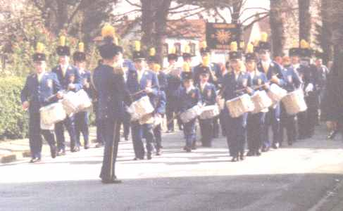

Dirigent
Ensembles
Van dorpsdrumbands tot slagwerkensembles van muziekscholen: al meer dan vijfendertig jaar bouwt en leidt Michel Mordant groepen die concerten geven en concoursen winnen in Nederland, Duitsland en België.
Nu
Huidige ensembles

Slagwerkensemble Jugendmusikschule Eschweiler
Opgericht door Michel Mordant op 5 juli 1996. Concerten, prijzen bij Jugend Musiziert en samenwerkingen over de grens.
Geschiedenis van het ensemble
Slagwerkensemble Jugendmusikschule Heinsberg
Een jong ensemble dat werkt aan kamermuziekrepertoire, zoals het Scherzo van Saul Goodman.
EnsemblepaginaArchief
Eerdere ensembles
Elke pagina documenteert de concerten, programma’s en concoursresultaten uit de jaren onder leiding van Michel Mordant.
Da Capo Musikschule Gangelt
Slagwerkles vanaf februari 2019; in juni 2024 werd een slagwerkensemble opgericht.
Bekijk
Fanfare St. Caecilia Broeksittard
Slagwerkensemble en drumband, met een nieuw opgedragen stuk: St. Caecilia on Parade.
Bekijk
Schutterij St. Salvius Limbricht
Tamboer-, hoorn- en klaroenkorps; winnaar van het jaar in de 1e divisie en een cd-opname.
Bekijk
Music School Kreato, Thorn
Slagwerkensemble met optredens op de Day of Percussion, op festivals en met blazersensembles.
BekijkFanfare Concordia, Einighausen
Slagwerkensemble en jeugddrumband; winnaar van de 3e en 2e divisie in 2009.
BekijkHarmonie St. Cecilia, Grevenbicht-Papenhoven
Drumband en slagwerkensemble; predicaat ‘zeer goed’ op het Maasgouw-concours.
BekijkSchutterij St. Stephanus, Dieteren
Winnaar van de 3e divisie en algeheel concourswinnaar in Susteren, 2008.
Bekijk
Tamboer- en klaroenkorps St. Joseph, Vijlen
Michels eigen korps — als speler vanaf 1982 en als instructeur vanaf 1999, met vele concoursoverwinningen.
Bekijk
Drumband Trommelaere van Herle, Heerlen
Drumband in Heerlen, les vanaf juni 1996.
Bekijk
Slagwerkgroep St. Caecilia, Schinveld
Van de derde afdeling tot Nederlands kampioen in 1998.
BekijkDrumband St. Brigida, Noorbeek
Zeven concoursoverwinningen en promotie van de 3e naar de 2e afdeling.
BekijkDrumband St. Johannes St. Clemens, Merkelbeek
Een volledig overzicht van concoursen, punten en repertoire.
BekijkHarmonie Wilhelmina Wolder, Maastricht
Slagwerkensemble, les vanaf 27 augustus 2007. In 2010 trad het Kreato-ensemble samen met Harmonie Wilhelmina op in Posterholt. Website
Harmonie St. Pieter, Maastricht
Slagwerkensemble. In 2012 gaf Michel een workshop bij St. Pieter, samen met Myrthe en Sander.
DrumXperience, Schinveld
Slagwerkensemble — achtergrondinformatie (Word-document).
Open documentTamboers St. Sebastiaan, Schimmert
Tamboerkorps van schutterij St. Sebastiaan in Schimmert.
Tamboer- en klaroenkorps St. Martinus, Houthem
Tamboer- en klaroenkorps in Houthem.
Drumband St. Catharina, Lemiers
Drumband in Lemiers.
Als speler
Young Jazz Cats
Naast het dirigeren is Michel Mordant drummer van de Young Jazz Cats (Duitsland) — een New Orleans-jazzband die ook door New Orleans toerde.
Young Jazz Cats